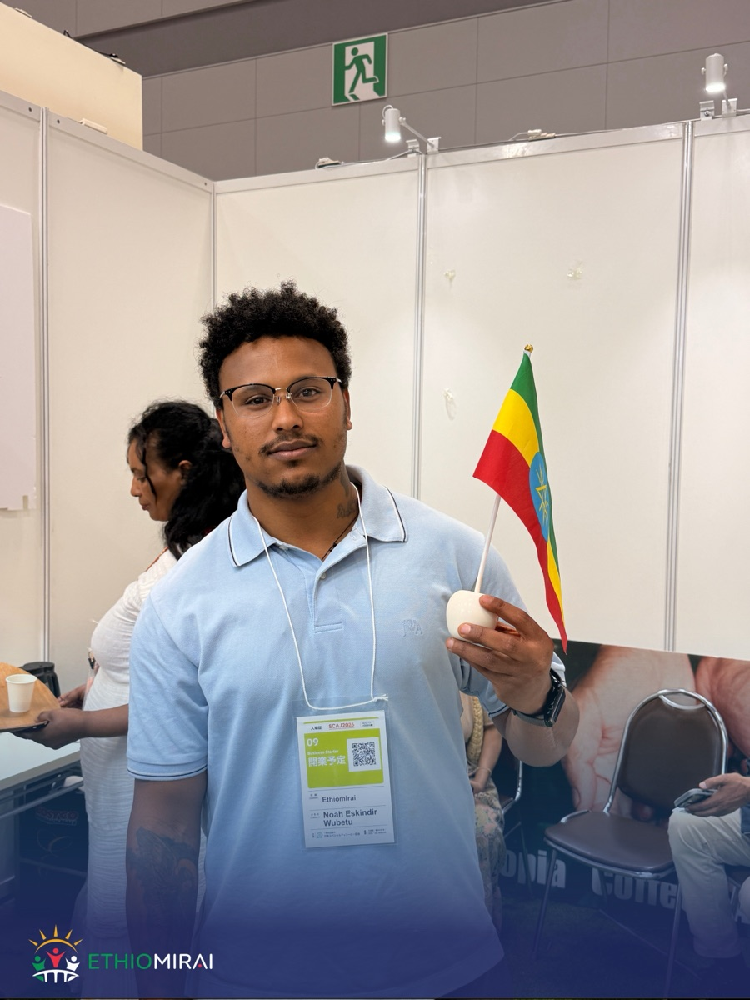

EthioMirai at SCAJ2026 — World Specialty Coffee Conference, Tokyo
SCAJ2026（世界スペシャルティコーヒー展示会）に参加しました
EthioMirai attended SCAJ2026, Japan's largest specialty coffee exhibition, in Tokyo. We met Japanese roasters, importers and equipment makers, and explored how Ethiopian coffee — from Sidama to Yirgacheffe to Guji — can reach more Japanese cups. If you are interested in Ethiopian coffee, we'd love to talk. Read more →
エチオ未来は、日本最大級のスペシャルティコーヒー展示会「SCAJ2026」（東京）に参加しました。ロースター・輸入商社・機器メーカーの皆様と交流し、シダマ・イルガチェフェ・グジをはじめとするエチオピア産コーヒーの可能性についてお話ししました。エチオピアコーヒーにご関心のある企業様は、お気軽にご連絡ください。続きを読む →